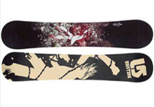

Snowboards
A snowboard is a thin, hourglass shaped board ridden down a sloped section of earth covered in snow. It is often thought of as the winter equivalent of a wakeboard, as the rider's feet are bound to the board via bindings. Snowboards generally have a length between 140-165cm and a width between 24 and 27 cm. The size variants are to accommodate the many varieties of people, skill levels, snow types, and riding styles that exist within the activity known as snowboarding. Snowboards are usually constructed with a laminated wood core sandwiched between multiple layers of fiberglass. The bottom or 'base' of the snowboard is generally made of various constructions of plastic, and is surrounded by a thin strip of steel, known as the 'edge'. The top layer, where a printed graphic usually resides, is usually made of Acrylic.
Snowboards come in several different styles, depending on the type of riding intended:
- Racing/Alpine: long, narrow, rigid, and directional shape. Best during machine groomed slopes. Most often ridden with a "hard" boot, but also ridden recreationally with soft boots, particularly by riders in Europe.
- Freeride: longer in length, and semi-directional. Moderate to stiff in flex. Used for long, fast turns in various types of snow from groomed hard-pack to soft powder.
- Freestyle: Generally shorter in length with a Semi-directional or twin-tip shape. Incorporates a deep sidecut for quick/tight turning. Used in the pipe and in the park on various jumps and terrain features including boxes, rails, and tables.
- Park/Jib (rails): flexible and short, twin-directional, wider stance, with the edges filed dull. Used for skateboard-park like snowboard parks.
- All-Mountain: A hybrid between freeride and freestyle boards. The 'jack of all trades, master of none.'
- Split: Not to be confused with the swallow-tail, the split board consists of a stable powder board that can be broken down into two touring skis, used when hiking in deep backcountry conditions.
Snowboards are generally constructed of a hardwood core which is sandwiched between multiple layers or fibreglass. Some snowboards incorporate the use of more exotic materials such as Carbon Fibre, Kevlar, Aluminium (as a honeycomb core structure), and have even incorporated Piezo dampeners. The front (or "nose,") of the board is upturned to help the board glide over uneven snow. The back (or "tail") of the board is also upturned to enable backwards (or "switch") riding. The base (the side of the board which contacts the ground) is made of Polyethylene plastic. The two major types of base construction are Extruded and Sintered. An extruded base is a basic, low-maintenance design which basically consists of the plastic base material melted into its form. A sintered base uses the same material as an Extruded base, but first grinds the material into a powder, then, using heat and pressure, molds the material into its desired form. A sintered base is generally softer than its extruded counterpart, but has a porous structure which enables it to absorb wax. This wax absorption (along with a properly done 'hot wax'), greatly reduces surface friction between the base and the snow. Snowboards with sintered bases are much faster, but require semi-regular maintenance and are easier to damage. The bottom-edges of the snowboard are fitted with a thin strip of steel, just a couple of millimeters wide. This steel edge allows the board to grab or 'dig in' to hard snow and ice (like the blade of an ice skate), and also protects the boards internal structure. The top of the board is typically a layer of acrylic with some form of graphic designed to attract attention, showcase artwork, or serve the purpose similar to that of any other form of printed media. Flite Snowboards, an early and often underquoted designer, pressed the first closed-molded boards from a garage in Newport, RI in the mid 1980's. Snowboard topsheet graphics can be a highly personal statement and many riders spend many hours customizing the look of their boards. The top of some boards may even include thin inlays with other materials, and some are made entirely of epoxy-impregnated wood. The base of the board may also feature graphics, often designed in a manner to make the board's manufacturer recognizable in photos.
Boots
Snowboard boots are mostly considered soft boots, though alpine snowboarding uses a harder boot similar to a ski boot. A boot's primary function is to transfer the rider's energy into the board, protect the rider with support, and keep the rider's feet warm. A snowboarder shopping for boots is usually looking for a good fit, flex, and looks. Boots can have different features such as lacing styles, heat molding liners, and gel padding that the snowboarder also might be looking for. There are snowboard boots that are made for most bindings and some that are made for "step in" style bindings. Although step in boots will need to be purchased in tandem with their corresponding bindings. Snowboard boots differ from other types of boots in that they provide internal support to transfer the rider's movements to the board. Some boots that look like snowboard boots, but are not real snowboard boots, are unsuitable for snowboarding.
Bindings
Bindings are separate components from the snowboard deck and are very important parts of the total snowboard interface. The bindings main function are to hold the riders boot in place tightly so the rider can transfer their energy to the board. Most bindings are attached to the board with four screws that are placed in the center of the binding. Snowboard bindings, unlike ski bindings, do not automatically release upon impact or after falling over. With skis, this mechanism is designed to protect from injuries (particularly to the knee) caused by skis torn in different directions. Automatic release is not required in snowboarding, as the rider's legs are fixed in a static position and twisting of the knee joint cannot occur to the same extent. Furthermore it reduces the dangerous prospect of a board hurtling downhill riderless, and the rider slipping downhill on his back with no means to maintain grip on a steep slope. Nevertheless, some ski areas require the use of a "leash" that connects the snowboard to the rider's leg or boot, in case the snowboard manages to get away from its rider. This is most likely to happen when the rider removes the board at the top or the bottom of a run (or while on a chairlift, which could be dangerous).
Stances
There are two types of stance-direction used by snowboarders. A "regular" stance is when the rider's left foot is at the front of the snowboard. "Goofy", the opposite stance direction, is when the right foot is at the front of the snowboard, as in skateboarding. Although one is called "regular", it does not imply that one stance is more common or normal than the other. There are different ways to determine whether a rider is "regular" or "goofy". One method used for first time riders is to observe the first step forward when walking or climbing up stairs. The first foot forward would be the foot set up at the front of the snowboard. Another method used for first time riders is to use the same foot that you kick a soccer ball with as your back foot. This is a good method for setting up the snowboard stance for a new snowboarder. However most people who have a surfing or skateboarding background, will snowboard the same way as they do in the other sports. Most experienced riders are able to ride in the opposite direction to their usual stance (i.e. a "regular" rider would lead with their right foot instead of their left foot). This is called riding "fakie" or "switch".
Source:Wikipedia